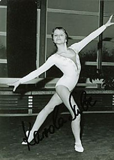

Karola Sube (GDR)
1980 Olympic Team Gold Medalist

Medal Total
Olympic Games: 1
Bronze
World Championships: 1 Bronze
Karola was born on April 28, 1964. She trained at SC Dynamo Berlin.
Competition Results
1977
DTV Jr. Challenge Cup: 1st Team, 3rd AA
GDR Youth Spartakiade: 1st B
Jr. GDR Championships: 2nd B
Jr. USSR-GDR Dual Meet: 5th AA
1978
Antibes International: 6th AA
Chunichi Cup: 5th AA
GDR Championships: 5th AA
GDR-USSR Dual Meet: 2nd Team, 11th AA
1979
Champions All: 5th AA
Cottbus International: 2nd AA
European Championships: 36th AA
GDR Championships: 7th B
GDR-NOR-SWE Meet: 1st Team, 5th AA
SUI-GDR Dual Meet: 1st Team, 5th AA
World Championships: 3rd Team, 21st AA (prelims)
1980
GDR Championships: 5th AA, 3rd B, 4th FX, 7th UB
GDR-HUN Dual Meet: 1st Team, 3rd AA
GDR-NOR-SWE Meet: 1st Team, 5th AA
Olympic Games: 3rd Team, 23rd AA (prelims)
This page was created on September
02, 2006 and was last updated on November 21, 2020.
© Gymn Forum